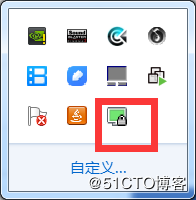
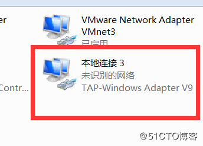

centos7系统安装配置openvpn服务端
更新时间：2018年04月10日 08:55:41 作者：crystaleone  我要评论
我要评论
一直没研究过vpn，最近找个视频，学了下，搭环境，测试成功，速记录在案：
使用环境：
openvpn服务端安装在centos7系统平台上；
openvpn客户端安装在windows平台上；
其中的操作步骤有些很像此前写过的一篇文章CA服务器签署证书的步骤；
openvpn就是安全的vpn，通过openssl实现ssl加密解密；
openvpn实现的简单原理个人理解是：
通过openvpn客户端和服务器端用虚拟网卡建立逻辑的安全的通信连接，然后再通过物理网卡传输数据；
即首先openvpn服务端，安装程序并开启服务，然后服务器端会自动生成一个虚拟网卡tun0，用来建立安全通行用的，并监听一个端口，准备接收客户端的请求；
第二，客户端安装openvpn后，也自动生成一个虚拟网卡，openvpn客户端需要指定openvpn服务端的物理网卡上的ip地址和监听的端口进行连接；
第三，证书、密钥、密码都通过后，即实现了vpn（虚拟私有网络）功能；
具体配置步骤：
1 2 3 4 5 6 7 8 9 10 11 12 13 14 15 16 17 18 | 第一：安装软件 ]# yum install openvpn easy-rsa第二：准备相关目录和配置文件 ]# cp /usr/share/doc/easy-rsa-3.0.3/vars.example /etc/openvpn/easy-rsa/vars ]# cp -r /usr/share/easy-rsa/3.0.3/* /etc/openvpn/easy-rsa/复制的文件有：easyrsa、openssl-1.0.cnf、x509-types； ]# cp /usr/share/doc/openvpn-2.4.5/sample/sample-config-files/server.conf /etc/openvpn/ 编辑vars文件： set_var EASYRSA_REQ_COUNTRY "CN" set_var EASYRSA_REQ_PROVINCE "Beijing" set_var EASYRSA_REQ_CITY "Beijing" set_var EASYRSA_REQ_ORG "OpenVPN CA" set_var EASYRSA_REQ_EMAIL "4********4@.qq.com" set_var EASYRSA_REQ_OU "My VPN" |
创建服务器端证书和key：
1 2 3 4 5 6 7 8 9 10 11 | 第一：目录初始化： ]# cd /etc/openvpn/easy-rsa/ ]# ./easyrsa init-pki第二：创建根证书： ]# ./easyrsa build-ca Enter PEM pass phrase: 输入2次pem密码，并记住（输入的pem密码是openvpn，后面会用到）； ........ Common Name (eg: your user, host, or server name) [Easy-RSA CA]: 输入名称；（输入的是opvpn-ca） 回车后显示： |
1 2 3 | CA creation complete and you may now import and sign cert requests.Your new CA certificate file for publishing is at:/etc/openvpn/easy-rsa/pki/ca.crt |
第三：创建服务器端证书：
]# ./easyrsa gen-req server nopass
Common Name (eg: your user, host, or server name) [server]: （输入是node2）
输入回车后显示：
Keypair and certificate request completed. Your files are:
req: /etc/openvpn/easy-rsa/pki/reqs/server.req
key: /etc/openvpn/easy-rsa/pki/private/server.key
第四：签署服务器端证书：
]# ./easyrsa sign server server
回车后，Confirm request details: （输入yes）
Enter pass phrase for /etc/openvpn/easy-rsa/pki/private/ca.key: （输入之前CA根证书的pem密码是openvpn）
回车后显示：
Check that the request matches the signature
Signature ok
The Subject's Distinguished Name is as follows
commonName :ASN.1 12:'node2'
Certificate is to be certified until Apr 4 16:04:29 2028 GMT (3650 days)Write out database with 1 new entries
Data Base UpdatedCertificate created at: /etc/openvpn/easy-rsa/pki/issued/server.crt
第五：创建Diffie-Hellman，确保key穿越不安全网络的命令：
]# ./easyrsa gen-dh
回车后，等的时间稍微长一点，最后显示：
DH parameters of size 2048 created at /etc/openvpn/easy-rsa/pki/dh.pem
第六：生成ta密钥文件
]# openvpn --genkey --secret /etc/openvpn/easy-rsa/ta.key
不执行此命令，会报错：
Sat Apr 7 12:53:37 2018 WARNING: cannot stat file 'ta.key': No such file or directory (errno=2)
Options error: --tls-auth fails with 'ta.key': No such file or directory (errno=2)
Options error: Please correct these errors.
Use --help for more information.
创建客户端证书及key ：
第一：创建过程同服务端：
]# mkdir /root/client
]# cd /root/client
]# cp -r /usr/share/easy-rsa/3.0.3/* ./
]# ./easyrsa init-pki
]# ./easyrsa gen-req client
回车后显示Enter PEM pass phrase: 输入密码，密码是之后客户端连接服务器要用的（输入的是vpnclient）
Common Name (eg: your user, host, or server name) [client]: （输入的是client，后面会用到）
回车后显示：
Keypair and certificate request completed. Your files are:
req: /root/client/pki/reqs/client.req
key: /root/client/pki/private/client.key
第二：将得到的clientone.req导入然后签约证书：
]# ./easyrsa import-req /root/client/pki/reqs/client.req client
回车后显示：
Note: using Easy-RSA configuration from: ./vars
The request has been successfully imported with a short name of: clientone
You may now use this name to perform signing operations on this request.
第三：签约证书
]# ./easyrsa sign client client
回车后，输入yes；
Enter pass phrase for /etc/openvpn/easy-rsa/pki/private/ca.key: （输入的是openvpn）
注意：
这里生成client所以第一个client位置必须为client，第二个参数client要与之前导入名字一致，导入的时候会要求输入密码，这个密码是第一次设置的根证书的密码，不要输错；因为openvpn是一个客户端对应一组证书密钥文件的；
回车后显示：
Check that the request matches the signature
Signature ok
The Subject's Distinguished Name is as follows
commonName :ASN.1 12:'client'
Certificate is to be certified until Apr 4 16:38:37 2028 GMT (3650 days)Write out database with 1 new entries
Data Base UpdatedCertificate created at: /etc/openvpn/easy-rsa/pki/issued/client.crt
拷贝相关文件
拷贝服务器端所需文件到各自位置：
]# cp pki/ca.crt /etc/openvpn/
]# cp pki/private/server.key /etc/openvpn/
]# cp pki/issued/server.crt /etc/openvpn/
]# cp pki/dh.pem /etc/openvpn/
]# cp /etc/openvpn/easy-rsa/ta.key /etc/openvpn/
拷贝客户端所需文件到各种位置：
]# cp pki/ca.crt /root/client/
]# cp pki/issued/client.crt /root/client/
]# cp /root/client/pki/private/client.key /root/client/
]# cp /etc/openvpn/easy-rsa/ta.key /root/client/
修改vpn配置文件：
1 2 3 4 5 6 7 8 9 10 11 12 13 14 15 16 17 18 19 20 21 22 23 | ]# egrep -v "^$|^#|^;" /etc/openvpn/server.confport 1194proto udpdev tunca /etc/openvpn/ca.crtcert /etc/openvpn/server.crtkey /etc/openvpn/server.key # This file should be kept secretdh /etc/openvpn/dh.pemserver 10.8.0.0 255.255.255.0ifconfig-pool-persist ipp.txtpush "redirect-gateway def1 bypass-dhcp"push "dhcp-option DNS 8.8.8.8"push "dhcp-option DNS 208.67.220.220"keepalive 10 120tls-auth ta.key 0 # This file is secretcipher AES-256-CBCcomp-lzomax-clients 100persist-keypersist-tunstatus openvpn-status.logverb 3explicit-exit-notify 1 |
启动openvpn服务器：
]# openvpn /etc/openvpn/server.conf &
启动成功后显示：
Sat Apr 7 13:00:23 2018 OpenVPN 2.4.5 x86_64-redhat-linux-gnu [Fedora EPEL patched] [SSL (OpenSSL)] [LZO] [LZ4] [EPOLL] [PKCS11] [MH/PKTINFO] [AEAD] built on Mar 1 2018
Sat Apr 7 13:00:23 2018 library versions: OpenSSL 1.0.2k-fips 26 Jan 2017, LZO 2.06
Sat Apr 7 13:00:23 2018 Diffie-Hellman initialized with 2048 bit key
Sat Apr 7 13:00:23 2018 Outgoing Control Channel Authentication: Using 160 bit message hash 'SHA1' for HMAC authentication
Sat Apr 7 13:00:23 2018 Incoming Control Channel Authentication: Using 160 bit message hash 'SHA1' for HMAC authentication
Sat Apr 7 13:00:23 2018 ROUTE_GATEWAY 192.168.255.1/255.255.255.0 IFACE=eno16777736 HWADDR=00:0c:29:ef:e4:a7
Sat Apr 7 13:00:23 2018 TUN/TAP device tun0 opened
Sat Apr 7 13:00:23 2018 TUN/TAP TX queue length set to 100
Sat Apr 7 13:00:23 2018 do_ifconfig, tt->did_ifconfig_ipv6_setup=0
Sat Apr 7 13:00:23 2018 /sbin/ip link set dev tun0 up mtu 1500
Sat Apr 7 13:00:23 2018 /sbin/ip addr add dev tun0 local 10.8.0.1 peer 10.8.0.2
Sat Apr 7 13:00:23 2018 /sbin/ip route add 10.8.0.0/24 via 10.8.0.2
Sat Apr 7 13:00:24 2018 Could not determine IPv4/IPv6 protocol. Using AF_INET
Sat Apr 7 13:00:24 2018 Socket Buffers: R=[212992->212992] S=[212992->212992]
Sat Apr 7 13:00:24 2018 UDPv4 link local (bound): [AF_INET][undef]:1194
Sat Apr 7 13:00:24 2018 UDPv4 link remote: [AF_UNSPEC]
Sat Apr 7 13:00:24 2018 MULTI: multi_init called, r=256 v=256
Sat Apr 7 13:00:24 2018 IFCONFIG POOL: base=10.8.0.4 size=62, ipv6=0
Sat Apr 7 13:00:24 2018 IFCONFIG POOL LIST
Sat Apr 7 13:00:24 2018 Initialization Sequence Completed
或使用systemctl启动：
1 2 3 4 5 | systemctl -f enable openvpn@server.service#设置启动文件systemctl start openvpn@server.service#启动openvpn的命令 |
windows7上配置openvpn客户端：
第一：下载openvpn客户端
链接地址：http://openvpn.ustc.edu.cn/
安装过程就不表了，具体配置说下：
下载相关文件到本特指的目录：
从centos7上把client.crt、client.conf并改名为client.ovpn、client.key、ta.key四个文件，放在安装目录下的config目录里即可；
client.ovpn配置文件内容：
1 2 3 4 5 6 7 8 9 10 11 12 13 14 15 | clientdev tunproto udpremote 192.168.255.12 1194resolv-retry infinitenobindpersist-keypersist-tunca ca.crtcert client.crtkey client.keyremote-cert-tls servertls-auth ta.key 1cipher AES-256-CBCverb 3 |
openvpn客户端登录：
双击图标后，弹出输入密码的窗口，此前设定的密码为vpnclient即可成功登录；表示成功登录；

openvpn图标变为绿色即成功连接openvpn服务器；

后续深入openvpn使用配置，等用时再充电。
您可能感兴趣的文章:
原文链接：http://blog.51cto.com/linsj/2096314

微信公众号搜索 “ 脚本之家 ” ，选择关注
程序猿的那些事、送书等活动等着你
相关文章
 这篇文章主要详细介绍了linux中rm命令使用方法以及使用实例分享，十分全面，这里推荐给需要的小伙伴。2015-01-01
这篇文章主要详细介绍了linux中rm命令使用方法以及使用实例分享，十分全面，这里推荐给需要的小伙伴。2015-01-01 这篇文章主要给大家介绍了linux expect实现登陆远程主机并执行命令的相关资料，文中给出了详细的示例代码供大家参考学习，对大家具有一定的参考学习价值，需要的朋友们下面来一起看看吧。2017-06-06
这篇文章主要给大家介绍了linux expect实现登陆远程主机并执行命令的相关资料，文中给出了详细的示例代码供大家参考学习，对大家具有一定的参考学习价值，需要的朋友们下面来一起看看吧。2017-06-06
CentOS7.2 忘记root密码及重置root密码的简单处理方法
这篇文章主要介绍了CentOS7.2 忘记root密码的简单处理方法，非常不错，具有一定的参考借鉴价值，需要的朋友参考下吧2018-08-08
linux上TCP connection timeout问题解决办法
这篇文章主要介绍了 linux上TCP connection timeout问题解决办法的相关资料,需要的朋友可以参考下2017-04-04 这篇文章主要介绍了详解Linux Namespace之User，小编觉得挺不错的，现在分享给大家，也给大家做个参考。一起跟随小编过来看看吧2018-09-09
这篇文章主要介绍了详解Linux Namespace之User，小编觉得挺不错的，现在分享给大家，也给大家做个参考。一起跟随小编过来看看吧2018-09-09 这篇文章主要介绍了详解CentOS 6.4 添加永久静态路由所有方法汇总,非常具有实用价值，需要的朋友可以参考下。2016-12-12
这篇文章主要介绍了详解CentOS 6.4 添加永久静态路由所有方法汇总,非常具有实用价值，需要的朋友可以参考下。2016-12-12 今天小编就为大家分享一篇关于makefile是什么及其工作原理的文章，小编觉得内容挺不错的，现在分享给大家，具有很好的参考价值，需要的朋友一起跟随小编来看看吧2018-09-09
今天小编就为大家分享一篇关于makefile是什么及其工作原理的文章，小编觉得内容挺不错的，现在分享给大家，具有很好的参考价值，需要的朋友一起跟随小编来看看吧2018-09-09 curl命令使用了libcurl库来实现，libcurl库常用在C程序中用来处理HTTP请求，curlpp是libcurl的一个C++封装，这几个东西可以用在抓取网页、网络监控等方面的开发，而curl命令可以帮助来解决开发过程中遇到的问题。2014-08-08
curl命令使用了libcurl库来实现，libcurl库常用在C程序中用来处理HTTP请求，curlpp是libcurl的一个C++封装，这几个东西可以用在抓取网页、网络监控等方面的开发，而curl命令可以帮助来解决开发过程中遇到的问题。2014-08-08 linux中的线程是轻量级的线程，linux中的线程调度是由内核调度程序完成的，每个线程有自己的ID号。与进程相比，它们消耗的系统资源少、创建较快、相互间的通信也较容易。2014-08-08
linux中的线程是轻量级的线程，linux中的线程调度是由内核调度程序完成的，每个线程有自己的ID号。与进程相比，它们消耗的系统资源少、创建较快、相互间的通信也较容易。2014-08-08


 苏公网安备 32031102000137号
苏公网安备 32031102000137号
最新评论